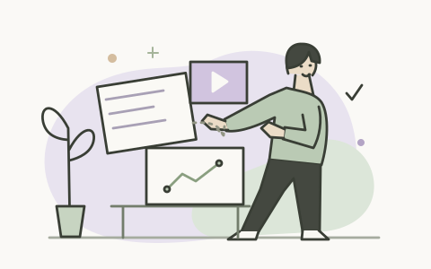

让好产品，
有个好故事。从一个场景开始，让每一步值得被看见。
有个好故事。从一个场景开始，让每一步值得被看见。

DIRECTION A · UPDATED先编排，再制作
简约插画工作台
米白底、灰紫与鼠尾草绿，配一组原创故事插画。舒展的页面先呈现场景，再逐步展开编辑，不用满屏面板压住内容。
莫兰迪色系原创线条插画可操作的场景大纲
不是把绿色换回紫色。这次比较的是内容怎么组织、画面放在哪里、选中后如何编辑。
两种设计都支持「大纲 → 故事与分镜 → 制作 → 审片」，共用当前浏览器里的项目。

米白底、灰紫与鼠尾草绿，配一组原创故事插画。舒展的页面先呈现场景，再逐步展开编辑，不用满屏面板压住内容。
素材区、监看器、属性区与横向片段序列。进入审片后，时间线贯穿整个窗口，让镜头与音轨一起可见。
可操作，不是截图。可以选择和修改步骤、切换场景大纲、调整分镜、播放示例动效、留下反馈。制作进度、示例产品画面和音轨波形均为模拟，未接真实录制或视频生成。方案 A/B 与功能 V1/V2 是两个不同维度。
原创几何图形 · 大尺寸 / 24 px / 16 px / 深色应用